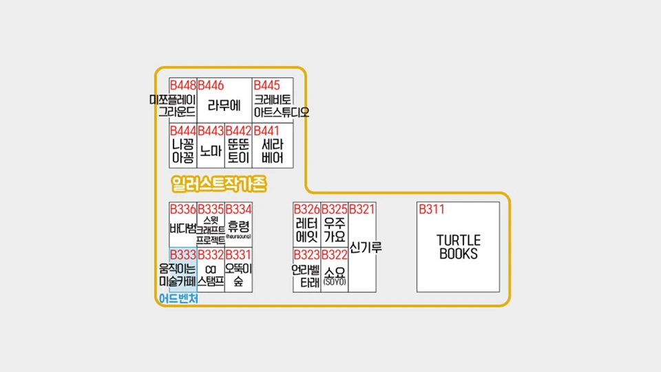
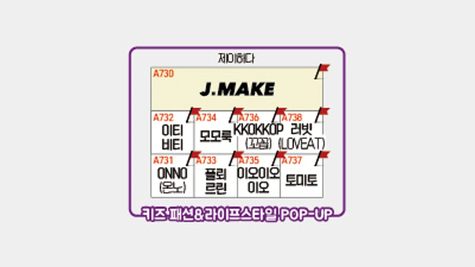

약 4년간 20여 개 전시·행사를 운영하며 참가자·참가업체·현장 관계자를 조율했습니다.

류연주1997년생010-3798-10965395640@naver.com
WHO I AM
사람과 사람 사이를 연결하는 전시기획자
안녕하세요, 사람과 사람 사이를 연결하는 전시기획자 류연주입니다.
행사 및 전시 기획 경력을 가진 전문가로 약 4년의 다양한 경험을 쌓았습니다.
주로 행사 기획, 전시 기획, 공식행사 운영, 홍보 및 마케팅에 관련된 업무를 수행하였습니다.
경험과 능력을 바탕으로 새로운 도전을 통해 끊임없는 성장을 추구하고 있습니다.
잘 부탁드립니다.
핵심 역량
관람객의 라이프스타일과 니즈를 반영한 특별관·콘텐츠를 기획하고 참가 브랜드를 유치합니다.
AI·바이브 코딩으로 수기 운영의 불편을 디지털 도구로 전환하고 현장에 적용했습니다.
2025.04 — 현재
(주)세계전람 · 전시1부 · 주임/팀원
- 서울국제유아교육전·키즈페어 등 전시 기획 및 현장 운영
- 특별관 기획, 참가사 유치, 현장 운영 관리
2022.09 — 2024.06
(주)덱스코 · MICE1팀 · 대리/팀원
- WBC 2024 등 국제학술대회 전시·참가자 운영
- 4,000여 명 참가자, 참가업체·부스·공식 프로그램 관리
2021.05 — 2022.01
(재)경주화백컨벤션센터(HICO) · MICE사업팀 · 사원/팀원
- 국제문화재산업전·한옥문화박람회 전시 지원
- 홍보물·뉴스레터·카드뉴스 제작 및 현장 운영
경력 기술
개인 유치한 57개사 103개 부스 중, 신규 업체 40개사, 62개 부스 유치, 공급가액 223,408,000원 매출과 대량협찬 2,128,000원 상당을 확보했습니다.
2025.04 — 2025.12 · 50개사 60개 부스 유치개인 유치한 50개사 60개 부스 중, 신규 업체 44개사·50개 부스 유치, 공급가액 101,355,000원 매출과 바터 1,100,000원 상당을 확보했습니다.
특별관 기획·참가사 유치, SNS 홍보 및 개최 보도자료 작성·기자단 콘텐츠 54건을 운영했습니다.
아웃바운드 16개사를 직접 발굴해 전체 개인 유치 부스의 26.7%를 구성하고, 가구 80석 협찬·운영요원 자동봇 신설·온라인 준비안내서 개발·어드벤처 특별관 앱 기반 티켓 신청으로 운영 비용과 수기 업무를 줄였습니다.
어드벤처관 5개 부스·740만원, 라이프스타일 리빙관 13개 부스·2,362만원과 바터 130만원을 유치했습니다. 팝업페스타 일러스트작가존은 DB 700개 중 372개사를 컨택해 18개사를 유치했습니다.
레뷰 기자단 40명을 운영해 콘텐츠 54건·상위노출 27건·조회수 41,268회·좋아요 952개를 만들고, 참가사 보도자료 84건과 개최 보도자료를 제작했습니다. 필로텍 200만원, 코코뮤 100만원 협찬과 디자인 가구 80석을 확보했습니다.
특별관 기획 및 참가사 유치, 현장 운영 관리
참가사 유치 및 현장 운영 관리
참가사 유치 및 현장 운영 관리
특별관 기획 및 참가사 유치, 현장 운영 관리
참가사 유치 및 현장 운영 관리
참가사 유치 및 현장 운영 관리
PA / 전시 운영 및 관리, 공식·사교행사 운영
PM / 행사 전반 준비 및 관리 운영(전시, 회의장, 홍보, 등록, 공식행사 운영 등)
PM / 행사 전반 준비 및 관리 운영(회의장, 홍보, 등록, 수송, 관광, 공식행사 운영 등)
PC / 전시 참가자 관리 및 현장 운영
PC / 행사 전반 준비 및 관리 운영(전시, 회의장, 홍보, 등록, 수송, 관광, 공식행사 운영 등)
PC / 전시 참가자 관리 및 현장 운영
PC / 행사 전반 준비 및 관리 운영(전시, 회의장, 홍보, 등록, 공식행사 운영 등)
PA / 수송, 숙박, 관광
PA / 수송, 숙박, 관광
PC / 전시 운영 및 참가자 관리
PA / 전시 운영 및 참가자 사전 관리, 환경장식물 제작
전시 사전준비 및 TM, 홍보물 제작(브로슈어, 뉴스레터, 카드뉴스 등), 현장 운영
전시 사전준비 및 TM, 부대행사 기획, 온라인 전시관 구축, 홍보물 제작(브로슈어, 뉴스레터, 카드뉴스 등), 현장 운영
자격·교육
- 한국전시산업진흥회 · 전시 고객 데이터 분석(시각화 및 분석툴) 교육 이수(2025.09.26 · 7시간)
- 한국전시산업진흥회 교육 이수(2025.09.19)
- 컨벤션기획사 2급 · 필기 합격(2025.03)
- 컴퓨터활용능력 2급 · 필기 합격(2025.03)
- 2종 보통 운전면허 · 최종 합격(2025.03)
- 달서구 관광코스 개발 우수상(2020.12) · 관광명소 발굴 공모전 장려상(2020.12)
- 파나소닉 대학생 홍보대사 PR챌린지 우수상(2019.07)
- 대구컨벤션뷰로
BE Planner양성 과정 수료 - 한국MICE협회
어서와, MICE는 처음이지?수료
전시기획MICE 운영참가사 유치현장 조율고객경험콘텐츠 기획모바일 웹DX·AI 활용바이브 코딩업무 자동화PowerPointExcelWord한컴오피스ClaudeCodexChatGPTGeminiSNS 활용
경험·활동
2024.10 — 2024.11
안동시청·한국정신문화재단 · 아르바이트
2024 세계인문도시네트워크 창립총회(WHCN 2024) 운영 지원
총 26개 도시·약 30명 규모 · 해외 참가자 사전 항공권 발권 및 현장 관리 · 1개월 계약직
2024.10.05 — 2024.10.09
유네스코국제무역센터 · 아르바이트
2024 Global Martial Arts Forum(GMAF 2024)
참가자 등록 및 중식 현장 운영
2024.08.31 — 2024.09.01
대웅제약 베어홀 · 아르바이트
제2회 한국수의중앙의학연구회 컨퍼런스
등록 및 전시장 현장 관리
PORTFOLIO
현장 프로젝트 기록
01 · DIGITAL OPERATIONS
스마트 럭키드로우
현장 수기 운영의 불편을 개선하기 위해 디지털 도구로 전환했습니다. 위 화면에서 실제 서비스를 체험할 수 있습니다.
참관객 대기 시간 감소 · 인쇄 원가 및 운영 인건비 2명→1명 · 참여율 130% 향상
06 · EXHIBITION CONTENT

일러스트 작가 특별관 기획·유치·운영
신규 일러스트 작가 콘텐츠 존을 기획하고 작가 DB 발굴부터 참가 유치와 현장 운영까지 연결했습니다.
현장 사진 22장 · 공식 배치도 보기
05 · EXHIBITION OPERATIONS

키즈 패션&라이프스타일 제이하다 특별관 기획·운영
브랜드 부스 구성과 상품 진열, 참가자 동선과 현장 운영을 관리한 특별관 프로젝트입니다.
현장 사진 25장 보기
02 · CAMPAIGN


참가 브랜드 모집 광고 제작
모집 홍보 영상을 만들고 실제 광고 집행까지 연결한 캠페인입니다.
기획 → 제작 → 실제 광고 집행
03 · CONTENT ASSET


뉴스레터 이미지 제작
전시회 소개 및 참가 안내를 단계별로 설계하고, 다음 회차에도 재사용할 수 있도록 탬플릿화하여 콘텐츠 자산화하였습니다.
전체 작업물 5장 보기
04 · CUSTOMER JOURNEY


카드뉴스 이미지 제작
관람객·참가업체·운영 스태프별로 필요한 정보를 나누고, 순간마다 꺼내 쓸 수 있는 메시지 체계로 만들었습니다.
전체 작업물 34장 보기
07 · SPECIAL HALL PLANNING
기획서 작성
어드벤처 특별관과 교육종사자 비즈니스 특별관의 콘셉트·프로그램을 기획했습니다.
기획안 2종 · 각 14페이지